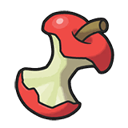

TE CUENTO TODO LO QUE NECESITAS SABER
Voy a intentar explicar todo lo necesario poco a poco.
Hay dos tipos de combate: individual o dobles.
El tipo individual es un combate a turnos entrenador contra otro, cada uno con 6 Pokémon y pudiendo usarlos
todos en el orden que quieras. Cada Pokémon tiene uno o dos tipos de los 18 disponibles,
una serie de movimientos (máximo 4), una habilidad, un objeto que llevan y unas estadísticas,
categorizadas en 6 apartados: Salud (Puntos de vida), Ataque (cantidad de daño), Defensa
(capacidad de resistencia a ataques), Ataque Especial (cantidad de daño especial), Defensa Especial
(capacidad de resistencia a ataques especiales) y Velocidad (determina el orden de cada turno).
El objetivo de los combates es GANAR (y pasarla bien, pero sobretodo ganar) y para ello,
hay que derrotar a todos los Pokémon del rival antes que te derroten a los tuyos.
La gracia de estos combates es la sinergia que se crea entre todos los elementos anteriormente mencionados
y las interacciones entre los diferentes tipos, ya que hay relaciones de daño entre estos:
pueden hacer daño súper eficaz, daño neutral, daño poco eficaz o 0 daño si son inmunes.
Antes he mencionado los objetos, pero creo que no voy a poder hacer el suficiente hincapié en lo capitales que son para la escena competitiva. La posibilidad de que (casi) cualquier Pokémon pueda llevar (casi) cualquier objeto es lo que le da tantísima variedad a cada partida. ¿Pero cómo actúa un objeto? Pues, simplemente, se lo das para que lo lleve encima. ¿Y qué hacen los objetos que hagan tan fuertes a los Pokémon? Pues sus efectos son tan variados como la cantidad de objetos que hay: algunos te suben el ataque, otros el ataque especial, las defensas, algunos te dan vida, otros te reducen el daño...
Antes he mencionado los objetos, pero creo que no voy a poder hacer el suficiente hincapié en lo capitales que son para la escena competitiva. La posibilidad de que (casi) cualquier Pokémon pueda llevar (casi) cualquier objeto es lo que le da tantísima variedad a cada partida. ¿Pero cómo actúa un objeto? Pues, simplemente, se lo das para que lo lleve encima. ¿Y qué hacen los objetos que hagan tan fuertes a los Pokémon? Pues sus efectos son tan variados como la cantidad de objetos que hay: algunos te suben el ataque, otros el ataque especial, las defensas, algunos te dan vida, otros te reducen el daño...
Vamos a ver mis objetos favoritos en esta generación (en orden de izquierda a derecha):
- Restos: Cura 1/16% de la salud total de quien lo porta al final de cada turno. Diría, firmemente, que es el objeto más utilizado de toda la franquicia. Metagames enteros de singles se han definido por este objeto. Literalmente lo puedes poner en cualquier Pokémon y siempre va a ser beneficioso. Se usa en Pokémon defensivos, atacantes, mixtos, supports...
- Pañuelo Elección: Aumenta un 50% la velocidad del usuario, pero sólo puede usar el primer ataque que seleccione cuando entre. El objeto ideal para sorprender a tu rival: Este objeto te permitirá atacar antes (¡y sin que se lo esperen!) al Pokémon enemigo. Incluso puedes intercambiarselo a tu rival con el movimiento "Trick" para fastidiar sus estrategias defensivas. Cada vez que cambies, podrás elegir un movimiento diferente que usar con tu Pañuelo Elección.
- Chaleco Asalto: La Defensa Especial de quién lo lleva aumenta un 50% (x1.5). Perfecto para Pokémon atacantes que también actúan como support, este arquetipo se conoce como "Bulky Support".
- Botas Gruesas: Cuando un Pokémon entra al combate, ignora los objetos dañinos que estén en su lado del campo. A los objetos dañinos como las Púas, las Tramparrocas o la Red Viscosa los llamaremos "Hazards" y son puestos en el campo cuando un Pokémon utiliza el movimiento que las hacen aparecer. En este meta están excesivamente rotas por la existencia de Gholdengo, un Pokémon nuevo que dificulta enormemente que se puedan quitar estos hazards (ya hablaremos de él), así que tener una manera de ser inmune a ello es muy importante
- Refleluz: Si su portador usa los movimientos "Pantalla de Luz", "Reflejo" o "Velo Aurora", se quedan en el campo durante ocho (8) turnos, en vez de cinco (5). Estas pantallas aumentan la defensa física, la defensa especial o ambas estadísticas a la vez del equipo entero durante varios turnos. Esto está muy fuerte, ya que permite que equipos hiperofensivos puedan subirse sus estadísticas más cómodamente. 


Aquí os dejo algunas de las habilidades más interesantes y claves para entender el meta: